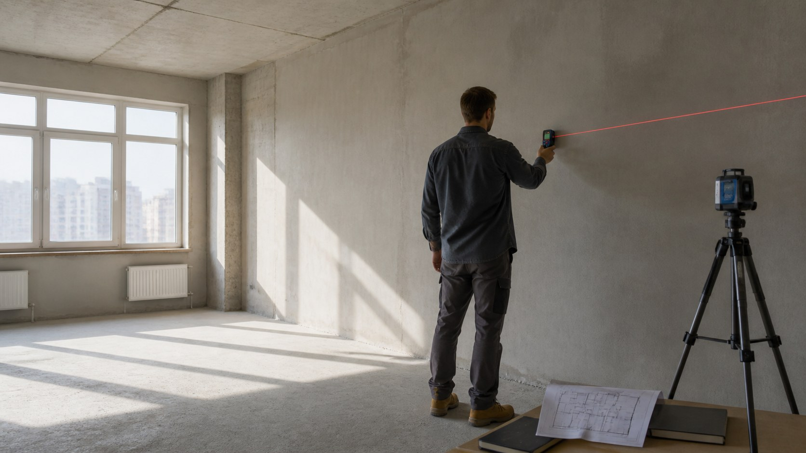
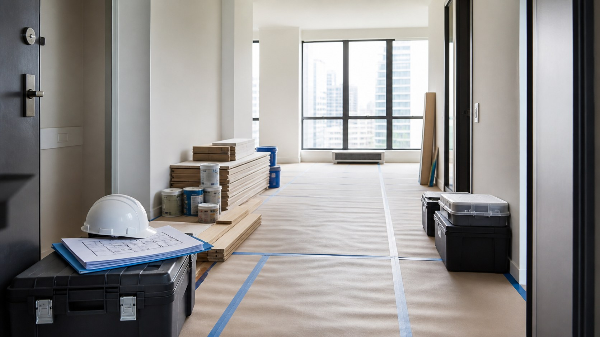

Ремонт стоит начинать не с демонтажа и не с покупки плитки. Первый этап — собрать исходные данные: обследовать квартиру, сформулировать задачи, сделать обмеры и проверить ограничения дома. После этого можно готовить проект, считать смету, выбирать подрядчика и согласовывать порядок контроля.
Такой порядок не гарантирует, что в процессе не появятся новые обстоятельства. Он помогает увидеть решения, которые зависят друг от друга, и не покупать материалы до того, как определены размеры, инженерные точки и последовательность работ.
Коротко весь путь выглядит так:
обследовать квартиру и собрать документы;
описать задачи для каждого помещения;
сделать обмеры и подготовить рабочие схемы;
составить ведомость работ, смету и график закупок;
проверить подрядчика и закрепить условия договором;
определить последовательность работ и точки контроля;
принимать этапы и сохранять исполнительную документацию.
Ниже разбираем каждый шаг и даём чек-лист, с которым можно свериться до начала демонтажа.

1Обследуйте квартиру и проверьте ограничения
Начните с фактического состояния объекта. Одинаковая площадь не означает одинаковый объём ремонта: квартира без отделки, объект с черновой подготовкой и вторичное жильё требуют разного набора работ. Осмотр нужен, чтобы отделить пожелания от технически необходимых действий.
Зафиксируйте исходное состояние
Сфотографируйте помещения общими планами и отдельно снимите стены, пол, потолок, окна, двери, стояки, щит, вентиляционные решётки и следы возможных протечек. Фото не заменяют акт или заключение специалиста, но помогают сохранить исходную картину и обсуждать конкретные участки без двусмысленности.
Для квартиры в новостройке проверьте комплект документов от застройщика, состояние ограждающих конструкций и инженерных вводов. Особенности такого объекта подробнее разобраны в материале про ремонт в новостройке.
Во вторичном жилье важно понять, что можно сохранить. Иногда ровное на вид покрытие скрывает слабое основание, а старая проводка или трубы ограничивают косметический сценарий. Решение о демонтаже принимают после осмотра, а не по фотографии объявления или общему возрасту дома.
Соберите техническую информацию
До проектирования запросите или найдите:
- план квартиры и доступный технический паспорт;
- схемы существующих инженерных сетей, если они есть;
- правила управляющей организации для проведения шумных работ;
- порядок отключения стояков, вывоза отходов и использования лифта;
- требования к доступу рабочих на территорию;
- сведения о допустимой электрической мощности;
- условия установки внешних блоков кондиционеров и другого оборудования на фасаде.
Правила конкретного дома лучше уточнить письменно. Устный ответ сотрудника управляющей организации может оказаться неполным, а режим работ и порядок доступа влияют на календарный план.
Определите тип стартовой ситуации
Для квартиры без отделки задача начинается с проверки геометрии, инженерных вводов и состава работ застройщика. Здесь особенно важно не считать черновую подготовку готовой только потому, что она формально есть: основания проверяют под требования выбранного финишного покрытия.
В квартире с отделкой от застройщика сначала решают, какие элементы действительно мешают будущему сценарию. Полный демонтаж не является обязательным по умолчанию. Если покрытие исправно, совместимо с новым решением и не скрывает дефект, его сохранение может сократить объём работ. Решение подтверждают осмотром, а не общим отношением к качеству типовой отделки.
Во вторичном жилье исходных неизвестных больше. До демонтажа не всегда видно состояние основания под полом, крепление перегородок, трассы проводки и труб. Поэтому в задании и смете отдельно отмечают позиции, которые можно уточнить только после вскрытия. Это честнее, чем включать в договор случайную точную цифру.
При косметическом ремонте границы тоже нужно определить заранее. Простая замена обоев может затронуть подготовку стен, электрофурнитуру, плинтусы и примыкания к дверям. Если эти сопутствующие работы не учтены, маленькая задача начинает расширяться уже после старта.
Отделите ремонт от перепланировки
Замена покрытий и оборудования в прежних местах обычно не равна перепланировке. Но изменение границ помещений, устройство или перенос проёмов, а также отдельные изменения инженерных сетей могут относиться к перепланировке или переустройству.
Если решение меняет конфигурацию квартиры или данные технического паспорта, сначала выясните порядок согласования. Несущие конструкции должен оценивать профильный специалист. Демонтаж до такой проверки создаёт юридический и технический риск: уже выполненные работы может потребоваться вернуть в исходное состояние.
2Составьте техническое задание на ремонт
Техническое задание описывает не стиль интерьера, а то, как квартира должна работать. Оно связывает привычки семьи, планировку, инженерные решения и будущую смету. Чем конкретнее исходные требования, тем меньше решений придётся принимать в спешке на объекте.
Опишите сценарий каждого помещения
Для каждой комнаты ответьте на одни и те же вопросы:
- кто и как будет пользоваться помещением;
- какая мебель и техника должны разместиться;
- что нужно хранить и где;
- какие сценарии освещения нужны;
- сколько требуется розеток и точек подключения;
- есть ли особые требования к акустике, уборке и износостойкости;
- что остаётся из существующей отделки или оборудования.
Начинайте с крупных и зависимых решений. Расстановка мебели определяет розетки и свет. Состав сантехники влияет на выводы воды и канализации. Кухонное оборудование связано с электрикой, вентиляцией и высотой рабочих поверхностей. Цвет стен можно выбрать позже, а трассу кабеля после чистовой отделки менять уже трудно.
Разделите обязательное и желаемое
Составьте два списка. В первый включите решения, без которых квартира не выполняет свою функцию: исправные инженерные системы, необходимое количество спальных мест, хранение, рабочую зону, безопасные проходы. Во второй — улучшения, от которых можно отказаться или которые можно заменить без потери основной функции.
Такое разделение полезно при расчёте бюджета. Если смета превышает доступную сумму, вы сокращаете второстепенные решения осознанно, а не случайно убираете важную инженерную работу ради заметной отделки.
Соберите референсы как требования, а не как коллаж
Фотографии интерьеров полезны, если пояснить, что именно в них нравится. Один и тот же кадр может привлекать цветом, светом, расположением мебели или ощущением свободного пространства. Подпишите каждый пример: «нужен рассеянный свет», «важна закрытая система хранения», «подходит спокойная фактура пола».
Отдельно соберите то, чего в квартире быть не должно. Такой список помогает избежать решений, которые выглядят эффектно на визуализации, но противоречат привычкам семьи: открытых полок при нежелании часто убирать, глянцевых поверхностей в активной зоне, сложного доступа к фильтрам или розеток за неподвижной мебелью.
Не превращайте референсы в указание скопировать чужой интерьер. Их задача — передать критерии проектировщику и подрядчику. Итоговое решение должно учитывать размеры, освещение, инженерные ограничения и доступные материалы именно вашего объекта.
Зафиксируйте границы работ
В задании должно быть ясно, какие помещения входят в ремонт, что демонтируется, что сохраняется и кто отвечает за смежные работы. Например, установка кухни, кондиционеров и встроенной мебели может выполняться отдельными компаниями, но их требования нужно учесть в проекте заранее.
Для поэтапного ремонта особенно важны временные границы: где люди будут жить, как изолировать рабочую зону, сохранятся ли доступ к санузлу и безопасный проход. Такой сценарий возможен, но требует отдельной логистики и защиты уже готовых поверхностей.
Назначьте ответственных за решения
До начала проектирования договоритесь, кто утверждает решения со стороны заказчика. Если квартирой пользуются несколько членов семьи, разногласия лучше снять до передачи задания строителям. У каждого помещения должен быть один согласованный сценарий, а не несколько противоречащих пожеланий.
Составьте перечень участников проекта: заказчик, проектировщик, прораб, специалисты по инженерии, поставщики кухни, дверей, кондиционирования и встроенной мебели. Для каждого укажите, какие данные он передаёт и к какой дате. Например, поставщик кухни сообщает требования к электрике и воде до выполнения инженерной разводки, а не после заказа мебели.
Отдельно определите канал согласований. Важные решения удобно дублировать в одном общем журнале: дата, вопрос, выбранный вариант, кто согласовал, какие чертежи или позиции сметы изменились. Обычная переписка в нескольких чатах быстро теряет контекст, особенно если одинаковый материал обсуждался в разных помещениях.
Наконец, задайте правило версии. На объекте должен использоваться только актуальный комплект схем с датой или номером редакции. Старые листы убирают из рабочей папки, но сохраняют в архиве. Это простое действие снижает риск, что один специалист выполнит работу по прежней привязке, пока остальные уже ориентируются на обновлённое решение.
3Сделайте обмеры и подготовьте проект
Обмеры переводят общие пожелания в размеры. Проект связывает эти размеры с мебелью, инженерией и отделкой. Масштаб документации зависит от задачи, но начинать закупки и монтаж без согласованных схем рискованно даже при косметическом ремонте.
Что измерить
Нужны не только длина и ширина комнат. В обмерный план включают:
- высоты и перепады пола и потолка;
- размеры проёмов, простенков, ниш и выступов;
- положение стояков, вентиляции и отопительных приборов;
- существующие электрические точки и щит;
- привязки выводов воды и канализации;
- особенности оконных откосов, подоконников и дверей.
Сложные инженерные системы и геометрию лучше поручить специалисту. Ошибка в одном размере способна перейти в заказ мебели, раскладку плитки или расположение сантехники.
Минимальный комплект схем
Даже без декоративной визуализации полезно подготовить:
- обмерный план;
- план после демонтажа и монтажа перегородок, если они меняются;
- расстановку мебели и оборудования с габаритами;
- планы розеток, выключателей и освещения;
- привязки сантехнических точек;
- планы пола и потолка;
- развёртки сложных стен и раскладку плитки;
- ведомость отделочных материалов и оборудования.
Для типового объекта может быть достаточно рабочего комплекта чертежей. Если планировка, инженерия или отделка сложные, нужен более подробный проект. На странице про технический дизайн квартиры показан формат документации, ориентированный на работу строителей.
Проверьте проект до сметы
Перед расчётом пройдите по квартире мысленно. Открываются ли двери и ящики, не пересекаются ли проходы, хватает ли места у мебели, совпадают ли розетки с техникой, доступна ли запорная арматура, можно ли обслуживать оборудование. Полезно проверить и типовые бытовые действия: где поставить пылесос, сушить вещи, заряжать устройства, хранить крупные предметы.
Проект не должен оставаться набором красивых картинок. Рабочие схемы нужны в масштабе, с размерами, привязками и понятными обозначениями. Все изменения после согласования фиксируют в актуальной версии, чтобы у заказчика, проектировщика и подрядчика был один комплект документов.
Согласуйте места стыков заранее
Большая часть спорных решений находится не в центре стены, а на границах материалов и зон. До закупок определите высоту и линию примыкания фартука, положение порогов, переходы напольных покрытий, раскладку плитки у углов и сантехники, сопряжение потолка со встроенными шкафами.
Проверьте открывание дверей рядом с мебелью и выключателями. Уточните толщину будущих слоёв: выравнивание, клей, плитка, подложка и покрытие меняют чистовые размеры. Эти данные влияют на дверные проёмы, заказ кухни, встроенные шкафы и высоту выводов.
Если часть оборудования выбирается позже, заложите не «примерное место», а допустимый диапазон размеров и требования к подключению. Тогда замена модели не заставит переносить уже выполненную розетку или вывод воды.
4Рассчитайте бюджет и график закупок
Смета отвечает на вопрос, за что платит заказчик. Она становится полезной только после обследования, технического задания и проекта. Ранняя ориентировочная оценка помогает понять масштаб, но не заменяет построчный расчёт конкретного объекта.
Разложите бюджет на части
Не смешивайте в одной строке всё, что называется ремонтом. Отдельно учитывайте:
- подготовительные и демонтажные работы;
- черновые и инженерные работы;
- чистовую отделку;
- черновые материалы;
- чистовые материалы и оборудование;
- доставку, подъём, хранение и вывоз отходов;
- проектирование и профильные обследования;
- работы сторонних исполнителей;
- резерв на пока не определённые работы.
Размер резерва нельзя назначить одинаковым для всех квартир. Он зависит от качества обследования и количества неизвестных условий. Во вторичном жилье неопределённость после демонтажа обычно выше, чем в новом объекте с понятными конструкциями. В смете лучше прямо перечислить неизвестные позиции и описать, как они будут оцениваться после вскрытия.
Требуйте измеримые позиции
Позиция сметы должна содержать понятную работу, объём, единицу измерения, цену и итог. Формулировка «ремонт комнаты» не позволяет проверить состав. Формулировки «подготовка стен под окраску» или «монтаж розеточных механизмов» уже можно сопоставить с проектом и объёмами.
Сравнивать предложения подрядчиков нужно по одинаковому заданию. Низкий итог может означать не выгоду, а пропущенные работы, другие материалы или иной уровень подготовки основания. Существенные расхождения разбирают построчно: что включено, что исключено, какие объёмы приняты и какие условия могут изменить цену.
Определите статус сметы
В договоре указывают, является смета твёрдой или приблизительной, а также порядок согласования дополнительных работ. Подтверждённая сторонами смета становится частью договора. Если после демонтажа обнаружилась скрытая проблема, подрядчик должен описать её, предложить решение и согласовать стоимость до выполнения дополнительной работы.
Не оставляйте доплаты в устной переписке. Минимальный набор для изменения — описание причины, объём, цена, влияние на срок и подтверждение заказчика.
Проверьте смету в три прохода
В первый проход сопоставьте её с проектом: у каждого решения должна быть работа, а у каждой работы — основание в задании. Так обнаруживаются забытые откосы, подготовка под встроенную мебель, выводы для техники и восстановление участков после монтажа инженерии.
Во второй проход проверьте единицы и объёмы. Площадь пола не равна площади закупаемого покрытия, но добавочный объём должен объясняться раскладкой и правилами конкретного материала. Количество электрических точек сверяют со схемой, а длины плинтуса — с планом помещений и проёмами.
В третий проход изучите исключения. Отдельный список «не входит» зачастую важнее красивого итога. Он показывает, кто оплачивает доставку, подъём, расходные материалы, уборку, вывоз отходов, пусконаладку и устранение следов после работ сторонних монтажников.
Составьте график закупок
Закупать всё одновременно не всегда рационально. Габаритное оборудование с длинным сроком поставки заказывают заранее, но хранят с учётом условий производителя и безопасности объекта. Черновые материалы привязывают к этапам. Чистовую отделку закупают после проверки размеров и утверждения раскладок.
График закупок должен учитывать дату, ответственную сторону, место приёмки, проверку количества и состояния. Если материал предоставляет заказчик, в договоре фиксируют его наименование, количество и состояние. Подрядчик должен оценить пригодность материала для предусмотренной работы и предупредить о выявленных рисках.
5Выберите подрядчика и закрепите условия договором
Портфолио показывает визуальный результат, но не раскрывает организацию работ. Поэтому подрядчика оценивают по документам, процессу и возможности проверить реальные объекты.
Что проверить до решения
Запросите реквизиты исполнителя, пример договора и сметы, состав команды, порядок ведения объекта и контакты ответственного лица. Уточните, кто выполняет электромонтажные, сантехнические и другие профильные работы, как фиксируются изменения и кто принимает материалы.
Попросите показать не только готовые интерьеры, но и объект в работе. На нём видны порядок хранения, защита поверхностей, организация инструмента и отношение к документации. Подробный список вопросов собран в материале о том, как выбрать подрядчика.
Отзывы полезны как дополнительный сигнал, но не заменяют договор и проверяемый процесс. Один красивый кейс также не доказывает, что команда умеет работать с вашим типом дома, инженерией и уровнем сложности.
Признаки, которые требуют дополнительной проверки
Отложите решение и запросите пояснения, если исполнитель:
- отказывается дать договор и смету до внесения денег;
- называет окончательную стоимость без проекта или осмотра;
- предлагает начать демонтаж, пока не определены инженерные решения;
- не указывает, кто отвечает за объект и принимает решения;
- обещает согласовать изменения позже, после выполнения работы;
- показывает только визуализации или чужие фотографии без возможности проверить связь с реальными объектами;
- не может объяснить порядок приёмки скрываемых этапов;
- предлагает заменить предусмотренный материал без письменного согласования и проверки совместимости.
Один такой признак не всегда означает отказ. Например, ориентировочная оценка по площади допустима на раннем знакомстве, если она честно названа предварительной. Проблема начинается, когда ориентир выдают за обязательную конечную цену или используют, чтобы подтолкнуть к быстрому авансу.
Что включить в договор
В договоре и приложениях должны быть определены:
- точный объект и стороны договора;
- состав и объём работ;
- стоимость и статус сметы;
- начальный, конечный и при необходимости промежуточные сроки;
- порядок оплаты и приёмки этапов;
- правила закупки, передачи и хранения материалов;
- порядок согласования замен и дополнительных работ;
- ответственность сторон;
- гарантийные условия;
- состав документов, которые передаются после завершения.
Ответственность за нарушение сроков предусмотрена законом; договор может уточнять порядок взаимодействия и устанавливать дополнительные условия. Не заменяйте содержательный договор обещанием «всё решим по ходу». Для ремонта это означает, что важные решения будут приниматься уже после возникновения расходов.
Свяжите оплату с проверяемыми этапами
График платежей должен соответствовать реальному порядку работ и поставок. У этапа должны быть понятный результат и способ его принять. Например, завершение разводки инженерных сетей можно подтвердить осмотром, исполнительной схемой и актом до того, как коммуникации будут закрыты следующими слоями.
Условия аванса зависят от договора и закупок. Сам по себе аванс не доказывает недобросовестность, но его назначение должно быть понятно: какие материалы или работы он покрывает и какими документами подтверждается расход.
6Составьте последовательность работ и точки контроля
Календарный план нужен не только для ответа на вопрос о сроке. Он показывает зависимости: какие решения должны быть готовы до следующего этапа и когда потребуются материалы или специалисты.
Базовая логика работ
Состав этапов зависит от объекта, но общая последовательность обычно строится так:
подготовка объекта и защита сохраняемых элементов;
согласованный демонтаж;
монтаж перегородок и черновая подготовка;
прокладка инженерных сетей;
проверка работ, которые будут скрыты;
выравнивание и подготовка оснований;
чистовая отделка;
установка оборудования, дверей и электрофурнитуры;
пусконаладка, уборка и приёмка.
Это не универсальная технологическая карта. Конкретный порядок определяют проект, материалы и инструкции производителей. Например, отдельные покрытия требуют заданной влажности основания, а монтаж встроенной мебели связан с готовностью стен, пола и инженерных выводов.
Общий ориентир по длительности разных сценариев вынесен на страницу про сроки ремонта квартиры, но календарь конкретного объекта составляют только после определения состава работ.
Как читать календарный план
У каждого этапа должны быть начало, ожидаемый результат, зависимости и ответственная сторона. Отдельно отмечают решения заказчика и поставки, без которых работа остановится. Например, нельзя окончательно привязать сантехнические выводы без выбранного оборудования, а раскладку плитки — без её точного формата.
Не оценивайте график только по конечной дате. Проверьте, учтены ли технологические паузы, доступность профильных специалистов, приёмка скрываемых работ и исправление замечаний. Если несколько работ идут одновременно, убедитесь, что бригады не мешают друг другу и не повреждают готовые поверхности.
Полезно отмечать в календаре не только строительные операции, но и решения заказчика: утверждение образца цвета, выбор модели двери, согласование раскладки, приёмку поставки. Для каждого решения задают дату, после которой задержка повлияет на следующие этапы. Такой формат делает ответственность видимой и не позволяет объяснять любой сдвиг одной общей фразой о поставках.
Актуальный план должен отражать согласованные изменения. Сдвиг одной поставки сам по себе не всегда переносит весь проект: иногда последовательность можно перестроить. Но такое решение принимает ответственный специалист после проверки зависимостей, а не рабочий на месте по принципу «пока сделаем другое».
Определите контрольные точки
Контролировать нужно результат этапа до того, как он станет недоступен. К таким точкам относятся инженерная разводка, гидроизоляция, подготовка оснований, раскладка плитки и монтаж оборудования. Состав проверки заранее связывают с проектом, договором и применимыми техническими требованиями.
Для скрываемых работ полезны акты, фото и исполнительные схемы. Фотографии дополняют документы, но не заменяют измерения и заключения профильных специалистов. Проверку электрики, защитных устройств и других инженерных систем поручают квалифицированным исполнителям; бытовой тестер не заменяет требуемые измерения и протоколы.
Фиксируйте изменения
Если на объекте требуется отступить от проекта, сначала остановите связанную работу. Зафиксируйте причину, новое решение, стоимость, срок и влияние на соседние разделы. После согласования обновите рабочие схемы. Иначе одна устная замена может конфликтовать с мебелью, электрикой или отделкой на следующих этапах.
7Принимайте этапы и собирайте документы
Приёмка — это сравнение результата с договором, проектом, сметой и согласованными изменениями. Она начинается не в последний день, а на промежуточных этапах, особенно перед закрытием конструкций.
Как оформлять замечания
Для каждого замечания укажите помещение, точное место, суть несоответствия и способ проверки. Добавьте фото, если оно помогает увидеть проблему. Срок устранения фиксируют письменно с учётом характера дефекта; он должен быть разумным.
Видимые недостатки вносят в акт приёмки. Подписание акта не отменяет права заявить скрытые недостатки, обнаруженные позднее, в пределах гарантийного или установленного законом срока. Конкретный порядок зависит от договора и применимых норм, поэтому спорную ситуацию лучше оценивать с юристом по документам объекта.
Что сохранить после завершения
Соберите в одной папке:
- договор, смету и все согласованные изменения;
- акты выполненных и скрываемых работ;
- актуальные планы инженерных сетей;
- паспорта, инструкции и гарантийные документы на оборудование;
- документы о закупках, если они нужны для гарантии;
- итоговый перечень использованных материалов и цветов.
Исполнительные схемы пригодятся при обслуживании и следующем ремонте. По ним можно понять, где проходят кабели и трубы, не вскрывая отделку наугад.

8Чек-лист перед началом ремонта
До первого демонтажа проверьте, что готовы:
Если по одному из пунктов решения ещё нет, не обязательно останавливать весь проект. Но нельзя начинать связанную работу, пока неизвестность может повлиять на размеры, инженерные точки, стоимость или безопасность.
9Частые вопросы
С чего начать ремонт квартиры в первую очередь?
С обследования объекта и списка задач. Зафиксируйте состояние квартиры, соберите правила дома, определите, что сохраняется и меняется. После этого делайте обмеры и проект. Покупка чистовых материалов до этих шагов часто приводит к неверному количеству, размерам или несовместимости решений.
Что сначала: дизайн-проект или смета?
Сначала формируют техническое задание и обмеры, затем рабочий проект, после него — детальную смету. До проекта можно получить ориентировочную оценку, чтобы проверить доступный масштаб. Но построчный расчёт возможен, когда определены объёмы, материалы и инженерные решения.
Чем начало ремонта в новостройке отличается от вторичного жилья?
В новостройке оценивают качество переданного объекта, состав отделки от застройщика и готовность инженерных вводов. Во вторичном жилье дополнительно решают, что сохранить, а что демонтировать, и проверяют состояние существующих сетей и оснований. В обоих случаях порядок одинаков по логике: обследование, задание, проект, смета и договор.
В какой последовательности выполнять ремонтные работы?
Сначала готовят объект и выполняют согласованный демонтаж, затем переходят к конструкциям и инженерным сетям, проверяют скрываемые работы, готовят основания и только после этого выполняют чистовую отделку и монтаж оборудования. Точная технологическая последовательность зависит от проекта и выбранных материалов.
Можно ли начать ремонт без полного дизайн-проекта?
Для простого косметического сценария может быть достаточно обмерного плана, расстановки мебели, схем электрики и перечня отделки. Если меняются перегородки, инженерия, сложные узлы или встроенная мебель, нужен более подробный комплект рабочих чертежей. Визуализация может быть необязательной, но размеры и привязки нужны строителям в любом случае.
Как выбрать подрядчика и сравнить сметы?
Передайте кандидатам одинаковое задание и проект. Сравнивайте не только итог, но и состав работ, объёмы, материалы, исключения, сроки и порядок приёмки. Проверьте реквизиты, договор, действующие объекты и ответственных специалистов. Неясные или сильно отличающиеся позиции разбирайте до подписания договора.